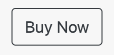

These two simple tasks are all you have to do to complete the mid-term quiz, which you should complete by the morning of Saturday October 17th, when I will be submitting the mid-term grades.
Task 1: Pushing to WP Engine
From the WP Engine website for your account, go to the drop down next to your account name in the far upper right and choose "My Profile."
Then at the next screen, you will see a list of small links on the near left where you will choose "API Access".
Click the large purple "Generate Credentials" button in the upper right.
Copy these credentials to a place where you can retrieve them later.
Go back to your Local by Flywheel APPLICATION that resides on your computer now that you are armed with these API credentials.
In the lower right corner of the Local interface, where you will see Connect to: no host selected, " choose WP Engine and then enter the previously copied API credentials.
Then the interface will ask you "Where should we push . . . ?" – choose your site name up on WP Engine.
Then at the next screen, select the "PRODUCTION" environment, AND MAKE SURE you check the box for "include database."
Wait a few minutes for the upload to complete (it should tell you when it has moved from files to the database) and then check that your Remote site now looks like your Local site.
DM or email me the Link to your Remote site
.
REVISED: Modify a More Complex Custom Template Using Two WordPress Loops, One standard and One Using WP_Query
This exercise is based on a situation where a client asks for equal-height columns with buttons that all appear in the same place vertically, that is lined-up neatly across the screen, which the Woocommerce standard shop does not do for you.
Copy the below code into a file called archive-products-v3.php and put it in the page-templates FOLDER you copied previously.
Use the page you created last week or create a new page (it does not matter) and over in the document tab on the right (Gutenberg) choose the "Products Archive - IMPROVED" template.
Note a few things going on here: We use equal-height cards and we use a card footer so the "Buy Now" buttons all line up – this kind of alignment is visually calming and reassuring to the user.
YOUR ONLY task is to change the markup on those buttons so they look like this: 
You are looking for TWO classes to replace the one called btn-primary (while keeping the class called stretched-link because clients like what that one does).
In other words you will have a class attribute that looks like this class="btn some-class-you-looked-up another-class-you-looked-up stretched-link" in a place you YOURSELF find in the code in archive-products-v3.php where it makes sense that those buttons are being marked up.
Make this change locally and then push the change up to your REMOTE site with the "Push to WP Engine" button in the lower right of the Local application interface and DM or email me the link to your Remote site when done.